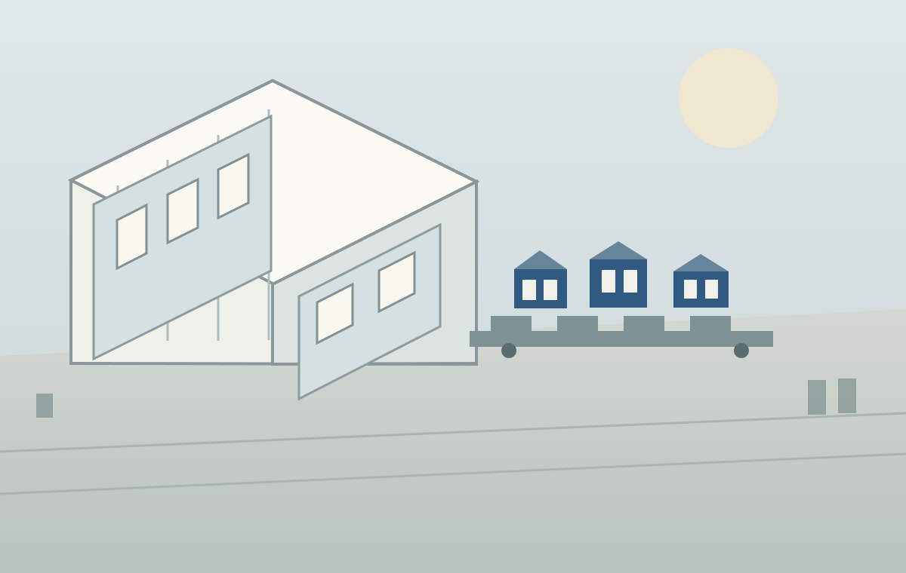

Making everyday work easier to see.
A selection of practical tools for production, reporting and business operations. Built to make useful information easier to find and everyday processes easier to follow.
Browse selected projects
Made for the work at hand.
Open a project for a closer look at the idea, the workflow and the tools behind it.
Production / Digital twin01A clearer way to explore a production plant.
A 3D model that brings the layout and production areas into view.
Open project details
A clearer way to explore a production plant.
A 3D model that brings the layout and production areas into view.
The idea
An interactive model of a production facility gives each area a visual place in the wider operation. It helps orient a viewer before they explore how work moves through the plant.
What is inside
Facility views, area labels and process context, organized as one navigable environment. The images are illustrative and omit live operational data.
Production overview Daily viewLine activityReporting statusReporting / Production02Reporting that is easier to follow.
A practical dashboard concept for bringing recurring production information into one readable view.
Open project details
Reporting that is easier to follow.
A practical dashboard concept for bringing recurring production information into one readable view.
The idea
Make a recurring report easier to review by putting the main categories, checks and trends in one consistent layout.
How it works
Data is gathered, checked and arranged into a repeatable reporting flow. The interface prioritizes readable labels and a clear path from overview to detail.
Workflow checklist✓Gather the source information✓Prepare a suggested next step✓Review before handoffWorkflow / Review03Small automations with a clear handoff.
A workflow concept that keeps review steps visible when a task needs a person's judgment.
Open project details
Small automations with a clear handoff.
A workflow concept that keeps review steps visible when a task needs a person's judgment.
The idea
Automate repeatable preparation work while keeping an obvious place for someone to review, adjust or approve the next step.
What it emphasizes
Clear instructions, visible status and a deliberate handoff. The workflow is described in everyday terms rather than as an AI feature.
IntakeCapture the requestPlanMake the next step clearDeliverKeep work visibleReferenceKeep useful contextBusiness / Process04Connecting the steps around a project.
A simple operating flow that links intake, planning, delivery and shared reference.
Open project details
Connecting the steps around a project.
A simple operating flow that links intake, planning, delivery and shared reference.
The idea
Give related business activities a shared structure so handoffs are easier to understand and less information gets lost between steps.
What it covers
A connected view of requests, project stages, follow-up and supporting notes, with clear ownership at each step.
Reference guide1Find the right procedure2Check the source note3Follow the documented stepsKnowledge / ERP05Everyday guidance, close to its source.
A reference tool concept for making documented procedures easier to find and use.
Open project details
Everyday guidance, close to its source.
A reference tool concept for making documented procedures easier to find and use.
The idea
Organize procedural knowledge so someone can move from a question to a relevant guide without losing the context behind it.
What it emphasizes
Clear sources, practical language and a direct route back to the documented process when more detail is needed.
Good systems start with understanding the process.
The projects here focus on the things that make work clearer: a useful view of the plant, a report people can read, a workflow with sensible handoffs and guidance that stays close to its source.